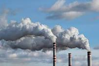

Air pollution
Air pollution is the greatest environmental threat to public health globally and accounts for an estimated 7 million premature deaths every year. Air pollution and climate change are closely linked as all major pollutants have an impact on the climate and most share common sources with greenhouse gases. Improving our air quality will bring health, development, and environmental benefits.
The UNEP Pollution Action Note displays the global state of air pollution, major sources, the impact on human health, and national efforts to tackle this critical issue.
Duis nisl mauris, aliquam sit amet luctus eget, dapibus in enim. Sed velit augue, pretium a sem aliquam, congue porttitor tortor.
Sed tempor nisl a lorem consequat, id maximus erat aliquet. Sed sagittis porta libero sed condimentum.
Aliquam finibus lectus nec ante congue rutrum. Curabitur quam quam, accumsan id ultrices ultrices, tempor et tellus.
With every breath we take, we suck in tiny particles that can damage our lungs, hearts, and brains and cause a host of other health problems. The most dangerous of these particles, which can include anything from soot, soil dust, to sulfates, are fine particles 2.5 microns or less in diameter —shortened as PM2.5.
In 2021, in response to increases in quality and quantity of evidence of air pollution impacts, the WHO updated the PM2.5 annual mean air quality guideline to 5µg/m3, which represents clean air as few impacts have been observed below these levels. The update halves the previous 2005 guideline level of 10µg/m3. On the way to that level, the agency also sets a series of interim targets, air pollutant concentrations that serve as steppingstones. They are meant for areas where air pollution is high, so governments in those areas can develop policies to reduce air pollution that are achievable within realistic time frames.
Even though air pollution is a global problem, it disproportionately affects those living in developing nations and particularly the most vulnerable, such as women, children and the elderly.
While paddy and wheat blanket agricultural land across Punjab and Haryana, they were not always so widespread. India’s persistent food shortages in the early post-independence period were addressed by the Green Revolution—a package of interventions focussed on increasing yields of rice and wheat. This involved introducing investments in irrigation, research into high-yielding crop varieties, subsidised chemical inputs such as fertilisers, and machinery, particularly in Punjab, Haryana, and Western Uttar Pradesh. All of which led to a dramatic increase in the yield of, and area under, wheat and paddy, and quickly replaced the traditionally diverse mix of local crops.
